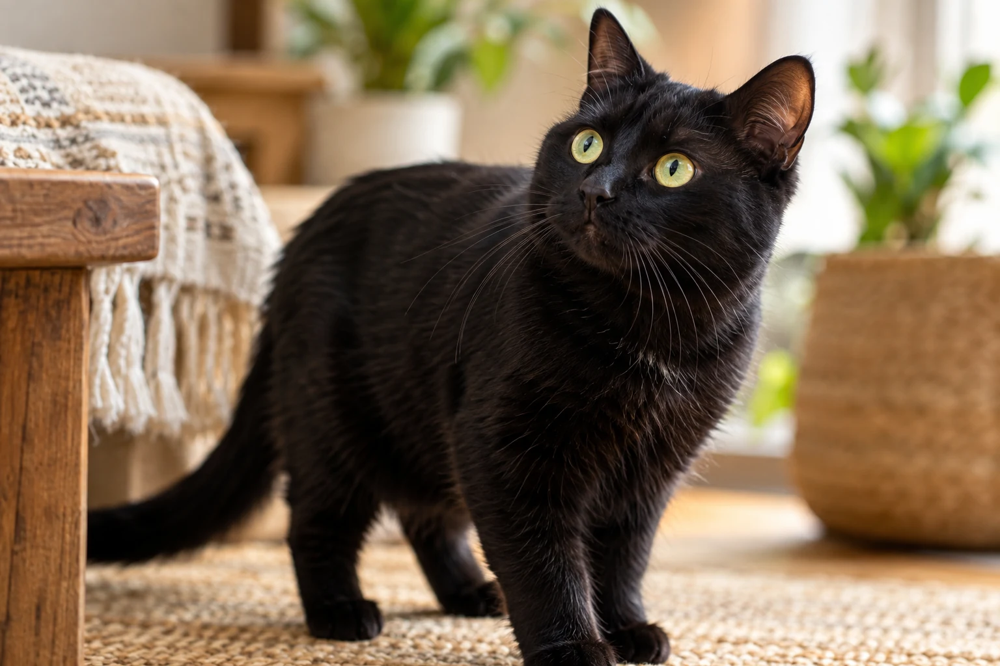
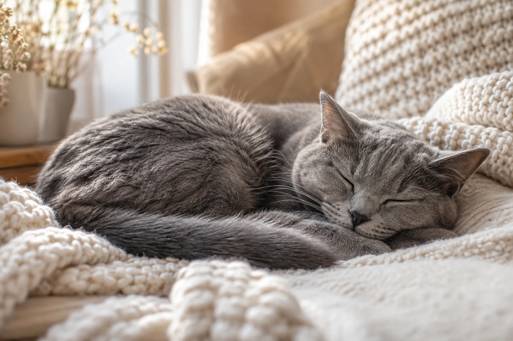

01 / Cuidado
Rotina com carinho
Comida, água fresca e um cantinho seguro: cuidado também é uma forma silenciosa de dizer “eu amo você”.
Conheça o projetoUm cantinho para quem ama de verdade
Ser mãe de gato é colecionar miados, pelos na roupa e momentos que fazem qualquer dia ficar mais bonito.
Explorar nosso cantinho
Uma conexão especial
Entre uma soneca no sofá e um olhar curioso pela casa, os gatos ensinam que carinho também mora nos pequenos gestos. Este é um espaço para celebrar essa amizade cheia de personalidade, respeito e muito amor.

Nosso universo
Três motivos para deixar o ronronar fazer parte da rotina.

01 / Cuidado
Comida, água fresca e um cantinho seguro: cuidado também é uma forma silenciosa de dizer “eu amo você”.
Conheça o projeto
02 / Afeto
Um ronronar por perto, uma cabeça encostada na mão e a certeza de que nunca estamos sozinhas.
Sentir essa conexão
03 / Alegria
Brinquedos espalhados, corridas pela sala e histórias engraçadas que só quem é mãe de gato entende.
Voltar ao começoUm retrato cheio de carinho
Conte um pouquinho sobre quem deixa seus dias mais felizes.
Pequenos cuidados, muito amor
Organize as tarefas que fazem parte da rotina do seu gato.